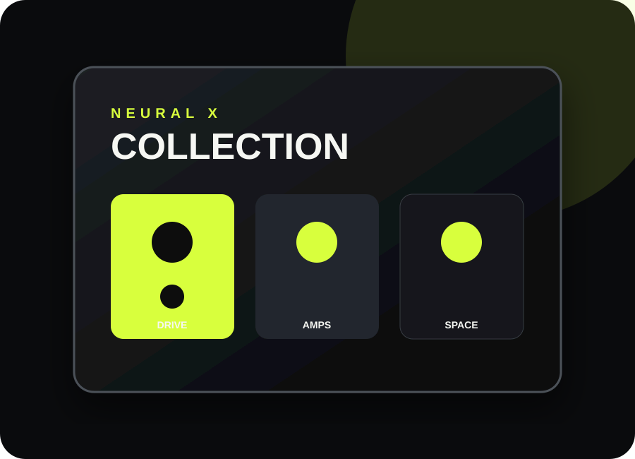
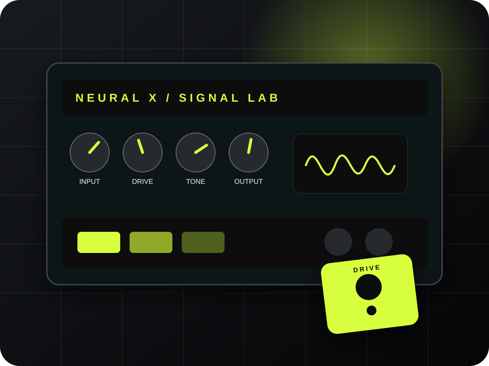

Mais completoGuitarra · baixo · efeitos
Neural X Collection
Uma coleção de timbres e ferramentas para criar bases limpas, drives modernos, high gain e ambiências.
Plugins · DAWs · produção musical
Ferramentas digitais para transformar ideias em gravações prontas. Escolha o produto, pague com segurança e acompanhe tudo em uma área só.

Escolha sua ferramenta
Produtos digitais selecionados para guitarristas, beatmakers, produtores e estúdios que querem um fluxo mais rápido.

Mais completoGuitarra · baixo · efeitos
Uma coleção de timbres e ferramentas para criar bases limpas, drives modernos, high gain e ambiências.

DAW · beats · composição
Crie beats, arranjos e mixagens em um ambiente visual pensado para manter suas ideias em movimento.

DAW · gravação · mixagem
Gravação multipista, edição precisa e mixagem em um ambiente leve, flexível e personalizável.
Simples do início ao fim
Um processo claro para você passar menos tempo comprando e mais tempo produzindo.
Compare os detalhes, compatibilidade e recursos de cada produto.
Finalize em um checkout da Stripe. A Neural X não armazena os dados completos do cartão.
Use o e-mail da compra para acompanhar o pedido na sua área do cliente.
Para sua rotina criativa
01
Explore timbres, efeitos e cadeias de sinal para gravação, estudo e criação.
02
Organize beats, arranjos e mixagens com ferramentas focadas no fluxo criativo.
03
Monte um ambiente versátil para capturar ideias e finalizar projetos no computador.
Antes de comprar
Depois que a Stripe confirmar o pagamento, o pedido é vinculado ao e-mail informado no checkout. Crie sua conta com esse mesmo e-mail para acompanhar o acesso.
O checkout é processado pela Stripe. Os dados completos do cartão não passam nem ficam armazenados nos servidores da Neural X.
Consulte a compatibilidade e os requisitos na página de cada produto antes da compra. Em caso de dúvida, fale com o suporte.
Use “Criar conta” e cadastre o mesmo e-mail utilizado no pagamento. Depois, seus pedidos aparecem na biblioteca assim que forem confirmados.
Abra um chamado na página de suporte com o e-mail da compra e, se tiver, a referência do pedido.
Sua próxima sessão começa agora